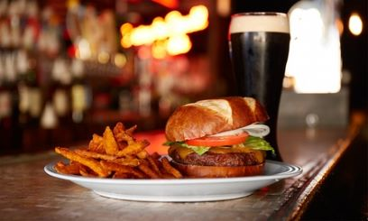

So in Honey , with our launch of online shopping, we’ve come full-circle, once again able to offer our time-tested family bagel recipes and craftsmanship directly to food lovers themselves, although now the entire country is able to enjoy. Honey believes everyone deserves a great Honey meal.All our meals are fresh, never frozen, and use only the finest all-natural ingredients with no preservatives and no bromates. Every Honey meal has a crisp shell and a chewy center, just as the perfect meal should. Our cheafs are dedicated to sending you the most delicious, all-natural meals in the world. Each meal we send you is freshly cooked, one at a time.
